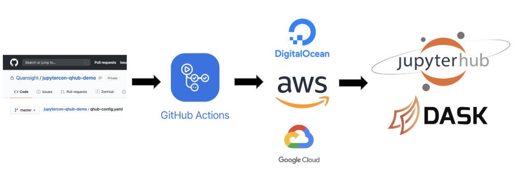

qhub documentation¶

Open source tooling for data science research, development, and deployment.
QHub is an integrated data science environment designed and developed by scientists at Quansight. QHub enables teams to build and maintain a cost effective and scalable compute/data science platform in the cloud. It provides an Infrastructure as Code platform that streamlines the deployment of data science infrastructure for teams.
QHub Technology Stack¶

QHub’s technology stack is an integration of the following existing open source libraries:
Terraform, a tool for building , changing, and versioning infrastructure. +Kubernetes, a cloud-agnostic and open source orchestration system
Helm, a package manager for Kubernetes
JupyterHub, a shareable compute platform for data science
JupyterLab, a web-based interactive development environment for Jupyter notebooks
Dask, a scalable and flexible library for parallel computing in Python
Dask-Gateway, a secure, multi-tenant server for managing Dask clusters
GitHub Actions, a tool to automate, customize, and execute your software development workflows in your GitHub repository,
as well as some newly created open source libraries: KubeSSH, Jupyter-Videochat, conda-store, and Conda-Docker.
Why We Created QHub¶
Deploying and maintaining a scalable computational platform in the cloud is difficult. There is a critical need in organizations for a shared compute platform that is flexible, accessible, and scalable. JupyterHub is an excellent platform for shared computational environments and Dask enables researchers to scale computations beyond the limits of their local machines. However, deploying and maintaining a scalable cluster for teams with Dask on JupyterHub is a highly difficult task. QHub is designed to solve this problem.
Core Ideas¶
The core ideas that have guided the creation of QHub are:
Open source
Cost-Effectiveness
Scalability
Robustness
Reproducibility
QHub provides teams with the following:
Easy installation and maintenance controlled by a single configuration file
Autoscaling JupyterHub installation deployed on the cloud provider of your choice
Option to choose from multiple compute instances, namely normal, high mem, gpu etc.
Autoscaling Dask compute clusters for big data using any instance type
Shell access and remote editing access (i.e. VSCode remote) through KubeSSH
Full linux style permissions allowing for different shared folders for different groups of users
Robust compute environment handling allowing both prebuilt and ad-hoc environment creation
Integrated video conferencing, using Jitsi
Open Source¶
At the heart of QHub is the ability to serve the needs of teams with multiple development environments and provide this valuable service as open source.
Cost-Effective¶
Cloud providers currently integrate well with kubernetes and provide autoscaling. QHub takes advantage of this by allowing users to request on-demand dask clusters. These clusters can be scheduled on arbitrary compute resources, such as high memory, high CPU, and GPU instances in a cost effective manner using kubernetes node groups.
Robust and Scalable¶
QHub is built on top of JupyterHub. What differentiates QHub from its alternatives is its ability to scale. QHub allows users to take full advantage of scalability through Dask in a robust way. QHub makes it easy to autoscale computations, authenticate multiple teams, and allow them to share their data and environments easily, resulting in a seamless and robust process of development and deployment within and among teams.
Flexible and Reproducible¶
QHub gives you the ability to select from available cloud providers: Amazon Web Services, Digital Ocean, and Google Cloud Platform. QHub handles the complexities associated with cloud deployments and allows you to focus on your development and research. As a QHub user, you will define your environment and deployment through a configuration file. QHub takes care of the rest, providing you with a smooth deployment process and maintenance. If you want to have full control over your deployment environment and customize it for your specific needs, QHub enables you to do that, as well.
more information about QHub¶
- Step-by-Step QHub Cloud Deployment
- Configuration
- Full Configuration Example
- Initializing Repository
- Frequently Asked Questions (FAQ)
- Do you have a question about QHub that is not answered in the documentation?
- What is Infrastructure as Code and how is it related to QHub?
- Q: How do I retrieve my user data from the EFS Share before I destroy my QHub on AWS?
- Q: How do I destroy my QHub deployment on Amazon AWS?
- Q: How do I use
nbconvert --executeon QHub from the Command Line? - What is QHub?
- What are the main benefits of using QHub?
- Is QHub free?
- What challenges does QHub solve?
- What technologies does QHub rely on?
- What is Jupyter Notebook?
- What is JupyterHub?
- QHub vs JupyterHub**
- What is Dask?
- What are environments?
- Why open source?